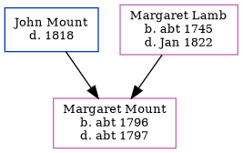

Margaret Mount c1796 - c1797
[ Home ] | [ Calendar ] | [ Surnames Index ] | [ Errors ] | [ Family History ]The child of John Mount and Margaret Lamb, Margaret Mount, the five times great-aunt of Nigel Horne, was born in Kent, England c. 17961 and baptised in St Nicholas-at-Wade, Kent, England on 6 Nov 1796.
She died c. 1797 in Kent1 and was buried in St Nicholas-at-Wade on 18 Mar 17971.
Parents
- Margaret was born c. 1745
Citations
- Kent, England, Tyler Index to Parish Registers, 1538-1874 Online publication - Provo, UT, USA: Ancestry.com Operations, Inc., 2010. This collection was indexed by Ancestry World Archives Project contributors.Original data - Frank Watt Tyler. The Tyler Collection. Canterbury, Kent, England: The Institute of Herald
Family Tree
Map
Generated by ged2site. Last updated on Jul 3, 2024